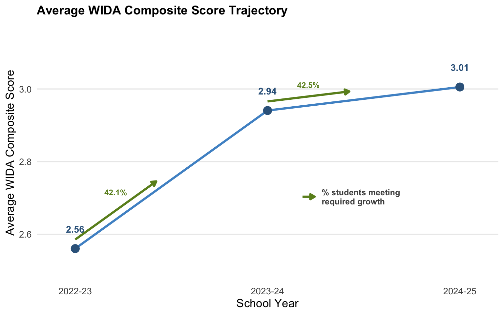
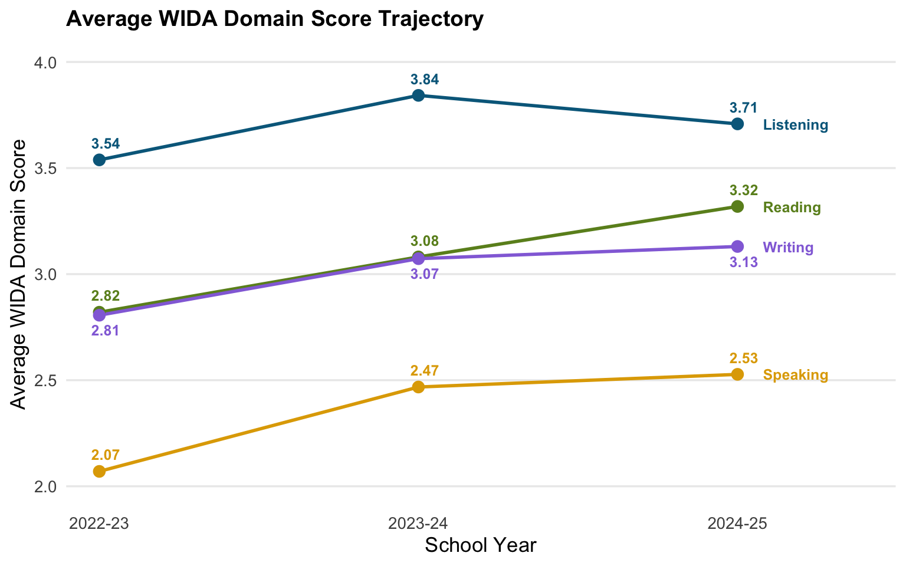
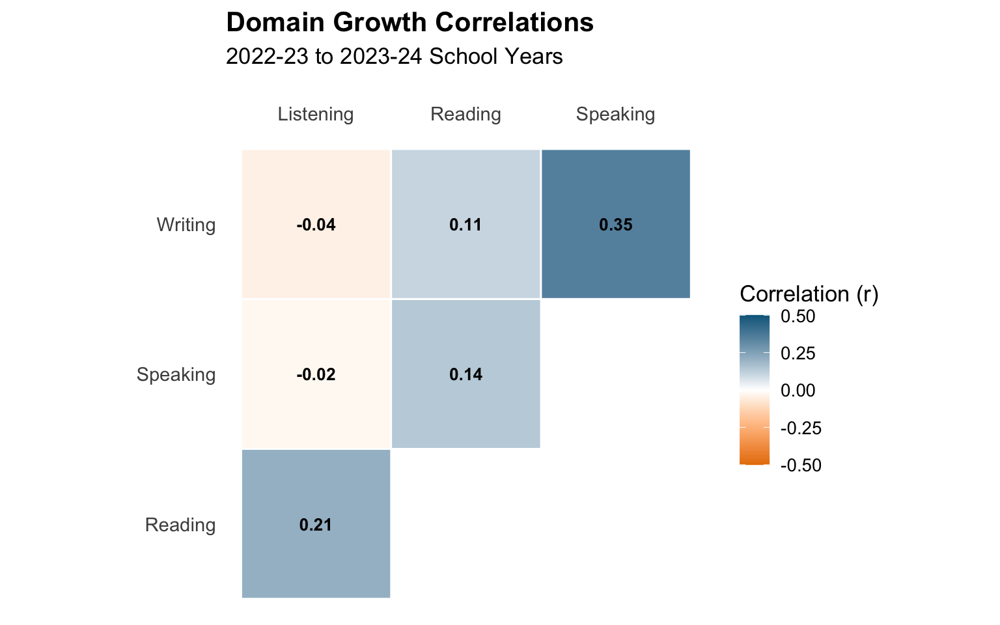
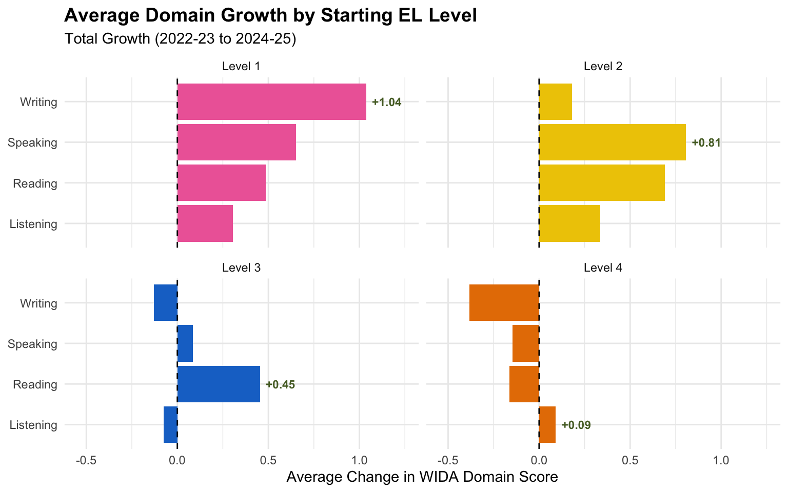
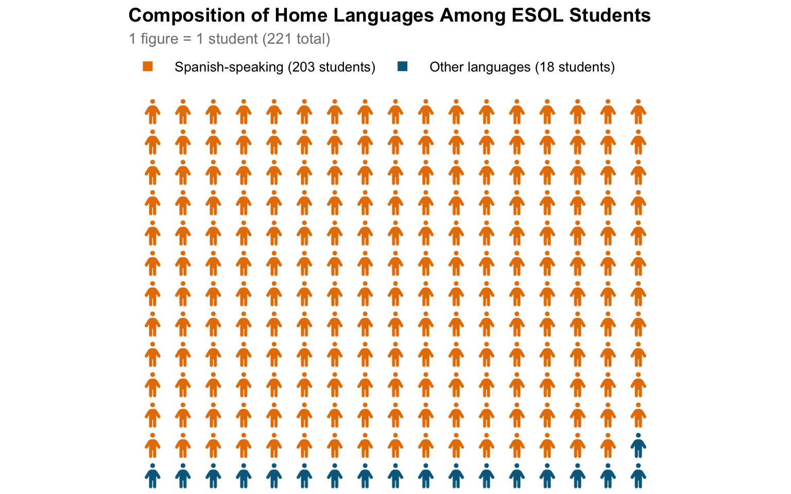

Although statistics are increasingly used within the education system, I believe that the English for Speakers of Other Languages (ESOL) subpopulation is often overlooked and under-studied in these analyses. As a current UVA student who attended a Title I high school recognized for having one of the largest ESOL student populations within Prince William County Public Schools, I am passionate about bringing greater attention to ESOL students. More specifically, I believe it is necessary to better understand how these English learners can most effectively learn, thrive, grow, and build a positive relationship with education, while accounting for the many internal and external challenges many may face as newcomers within a rather large and intimidating education system.
Using World-Class Instructional Design and Assessment (WIDA) scores and de-identified student characteristic data from the ESOL population at my former school, Unity Reed High School, this analysis explores patterns in English language development between the 2022-23 to 2024-25 academic years.
It is important to note that while each academic year includes about 500 to 700 ESOL student records, after filtering the sample to students with WIDA scores observed in all three years, we are left with 221 unique students. This drastic reduction is expected. ESOL populations frequently relocate, so the students within the ESOL program are constantly changing between each academic year and throughout the year (“Patterns of Student Mobility Among English Learner Students”). Additionally, some students may be absent during the WIDA testing window.
We begin by exploring whether Unity Reed ESOL students are generally progressing in their English development across school years. The line graph below illustrates the overall trend in the average WIDA composite scores for these 221 students, with green arrows representing the percentage that met their required growth targets in each period.

It is evident that there is a positive trend in English language development, since average composite scores consistently increase across academic years. However, the increase from 2022-23 to 2023-24 is more drastic, while growth from 2023-24 to 2024-2025 is more minimal.
One possible explanation is that in 2022-23, over half of the ESOL students were classified as “beginner” and were generally younger (freshman or sophomores). As a result, they may have been more motivated and in a better position to make initial improvement in basic English skills, which is reflected in the sharp increase in average score to 2.94 in the 2023-24 school year.
As these students progressed through high school, growth may have slowed for several reasons including how language acquisition tends to plateau at higher proficiency levels, motivation and drive may weaken, and students may place greater priority on work, family, or graduation requirements.
It is interesting that although overall growth appears greater in the first growth period, the proportion of students who met their required growth goals remains about the same. In fact, the percentage is slightly higher in the second growth period, despite the minimal increase in average scores. This suggests that we should not simply equate larger average gains with meaningful or significant progress in students’ individual English language development.
However, the observed growth thus far is simply based on overall composite scores. These composite scores are derived from four domain scores, which provide more detailed insight into English development across specific language skills.
WIDA composite scores are calculated as weighted averages of four domains scores, with greater emphasis placed on reading and writing (“WIDA MODEL Score Calculator”):
Similar to the overall composite score line graph, the plot below shows students’ English language development from 2022-23 to 2024-25 but separated into the four domain-specific skills.

It is evident that most ESOL students are strongest in their listening skills. This aligns with prior research, which suggests that listening tends to develop first in second-language acquisition. Learners typically begin in a “Comprehension” or “Preproduction” stage, where they adjust to a new linguistic environment, attune to language phonetics, and begin to understand the “associated sociolinguistic expectations” before producing the language themselves (Shcherbukha et al., 34).
On the other hand, speaking is often one of the last domains to develop, as it is a productive skill that requires active linguistic production (ex. retrieving vocabulary, pronunciation, real-time processing). Therefore, it is more cognitively demanding than receptive skills like listening and reading (SEOAI).
Overall, we observe trends similar to those in the composite score line graph. Listening, writing, and speaking all display a more dramatic increase from 2022-23 to 2023-24, followed by relatively stagnant (or slightly declining) growth from 2023-24 to 2024-25. There are various possible reasons for this plateau, including decreasing gains at higher proficiency levels, assessments of higher difficulty, and potential ceiling effects, especially in domains like listening where students may approach higher proficiency levels with less room for growth.
Interestingly, average reading scores follow an almost linear positive trend across both growth periods. Perhaps there is more consistent and structured focus on reading across subject areas (ex. English, history, science, etc.), resulting in steady improvement.
However, rather than simply examining domain growth independently, we also explore potential relationships between language skill development. The heatmap below visualizes the correlations between each domain growth pairing for the 2022-23 to 2023-24 period. A correlation of 1.0 indicates a perfectly positive linear relationship, while -1.0 indicates a perfectly negative linear relationship.

With a correlation of 0.35, there appears to be a weak-to-moderate positive relationship between writing and speaking growth. We further explore this relationship through an animated scatterplot of the writing vs. speaking trajectories of 10 randomly selected students over the three school years.
Use the Play button to animate trajectories across school years.
Although overall there is a positive movement, there is also considerable variation in the individual trajectories of these ten students. Some students show substantial improvement in writing but minimal gains, or even a decline in speaking. Furthermore, only three students (5, 7, and 9) display a consistent positive relationship between writing and speaking across both growth periods.
This suggests that writing and speaking are only partially complementary skills. Although they rely on similar foundational knowledge (such as English vocabulary and language exposure), there are key distinctions between them. For instance, writing often depend more on organization and structure while allowing for time to think and revise. Whereas speaking requires real-time processing, careful pronunciation, and a higher degree of self-esteem and confidence (Keiko). Therefore, some students may perform well in writing but struggle with speaking, and vice versa.
However, beyond domain growth, we have yet to account for the fact that these students begin at varying levels of English proficiency.
For context, English Learner (EL) levels are determined primarily by students’ overall WIDA composite score, which ranges from 1.0 to 6.0 (“Interpretive Guide for Score Reports WIDA”). The proficiency level ranges are:
For easier interpretation, we classify students’ EL level based on their 2022-23 WIDA composite score. Students are categorized according to these baseline EL levels for all three school years. Therefore, in this analysis EL classification remains constant, even if students’ proficiency levels change throughout the two growth periods.
Explore and compare growth patterns by EL level and academic year.
Average Growth in WIDA Composite Scores by EL Level: Total Growth
We first examine the overall average growth in composite scores. The dotted line at 0 represents the average baseline score from the 2022-23 school year, while the bars represent the average growth relative to this baseline across the two growth periods.
The inverse relationship between increasing EL levels and decreasing average composite growth is not surprising. Level 1 students are often newer to the United States and tend to have greater room for improvement and potential for initial growth.
However, students with higher English proficiency typically have been in the ESOL program for a longer period and may face slower growth. Along with ceiling effects, this may reflect a decrease in intrinsic drive and motivation to improve on the assessment.
Additionally, for students who are relatively fluent in English (ex. Level 4 students), WIDA scores may fail to accurately reflect their true abilities, particularly if students are not fully engaged with the assessment. However, we recognize that there are countless other factors and external circumstances that could contribute to this negative trend in average composite scores.
Student Count by EL Level
We find that the majority of students fall within Level 1, Level 2, and Level 3, with only 11 students classified as Level 4. This distribution of baseline levels suggests that many of these ESOL students already have familiarity with English.
Average Growth in WIDA Composite Scores by EL Level: Comparison by Year
Breaking EL level growth into the two periods (“Growth Comparison by Year” tab), we observe patterns consistent with the first “Average WIDA Composite Score Trajectory” plot. The majority of composite score growth within Levels 1, 2, and 3 occurs between 2022-23 to 2023-24, with relatively minimal growth from 2023-24 to 2024-25.
However, for Level 4 students, we observe a shift from slightly negative to slightly positive average composite growth. This may very well be because of the small sample size (11 students) for this EL level, which makes the mean more sensitive to even minor changes in individual growth.
Another possible explanation is that these students are approaching proficiency, and may have stronger incentives to improve, especially if they are nearing graduation. Although students are not required to exit ESOL in order to graduate, perhaps motivation to perform well on other required academic assessments (ex. SOL exams, class work/exams) may also carry over to WIDA performance.

Zooming in further, we examine the domain-specific growth within each EL Level across the total growth period. As expected, Levels 1 and 2 show consistent gains across all domains, while Level 3 portrays more mixed patterns of growth, and Level 4 shows near zero or negative growth across several domains.
However, we highlight that the domain with the greatest growth in each EL Level is unique. Level 1 students experience the largest gain in writing, which is also the single largest improvement across all levels and domains. Perhaps this reflects both the large room for improvement and the fact that writing can be more directly taught (through structured formats), allows time to think, and is overall more responsive to small increases in learning (Angela Rodriguez Mooney & Ahn Wheller).
Meanwhile, Level 2 students improve the most in speaking. By this stage, students may be more exposed to English conversation, which may support fluency and confidence in speaking. For Level 3 students, reading growth is most noticeable, possibly reflecting improvement in students’ ability to understand more difficult texts as their proficiency develops. Although Level 4 students display the most improvement in listening, these gains are minimal (likely due to ceiling effects). Also, given the small sample size (n = 11), mean domain growth may be strongly influenced by a few students.
Nevertheless, while we observe substantial differences in growth patterns across these EL Levels, proficiency alone does not fully explain variation in English learning. It is important to look outside of the classroom and into student-level characteristics to develop a more complete understanding of the influential factors shaping language acquisition.
Below are line and dumbbell plots comparing English development across student characteristics, including gender, special education identification, and home language.
It is important to note that while some students speak languages such as Amharic, Arabic, Mandarin, Dari, Farsi, French, Northern Pashto, Tagalog, and Urdu, there are only 18 students across these nine languages in total. Therefore, we group all non-Spanish-speaking ESOL students into a single group labeled “Other languages.”
Filter by gender, SPED status, and home language to explore score trajectories and domain growth.
Gender
The line plot comparing female and male ESOL students’ overall composite score trajectories indicates that there are minimal differences in average performance between gender. However, when analyzing the dumbbell plot, which highlights where these minimal differences originate, more specific patterns emerge.
Most noticeably, the largest gender gap appears in the writing and listening domains. Female ESOL students show greater progress in writing. This aligns with prior research suggesting that females outperform males in writing fluency and text quality, as they may engage more with structured learning approaches which supports writing skills (Dinsa) (Montero-SaizAja). Meanwhile, male ESOL students show greater improvement in listening, which may reflect differences in classroom engagement and interactive learning styles between male and female students.
Special Education Identification
When comparing special education (SPED) and non-SPED ESOL students, the line plot initially indicates that SPED students consistently have higher WIDA composite and domain scores. However, the dumbbell plot reveals weaker growth among SPED ESOL students overtime compared to their non-SPED peers.
In particular, average growth in SPED ESOL students’ writing and listening scores declines from 2023-24 to 2024-25, as shown by the two leftmost yellow points. In contrast, non-SPED ESOL students display positive growth across all four domains, outperforming the dual-identified (SPED and ESOL) students in writing, reading, and listening for the full growth period. Speaking is the only domain where dual-identified students show consistently greater average growth.
This shocking difference between overall trajectory and domain growth of dual-identified students may be explained by differences in baseline proficiency. Dual-identified students may start at higher proficiency levels, particularly if they are a long-term ESOL student, having received ESOL identification, services, and accommodations for much of their educational journey. Therefore, dual-identified students may have higher average WIDA composite scores for each year, while exhibiting slower (or even negative) domain growth.
Again, we note that there are far fewer dual-identified students (n = 37), so each of these students’ individual scores have more influence on group averages. Also, there is a range in disabilities and severity among SPED students, which may contribute to variation in growth.
Home Language
Finally, the composite and domain growth trajectories of Spanish-speaking ESOL students versus those who speak other languages generally portrays similar growth patterns, including the familiar plateau in 2024-25 (for composite scores). The key difference is that non-Spanish speaking ESOL students begin at a higher average baseline in both composite and domain scores and consistently remain above Spanish-speaking ESOL students over the three years.
However, at the domain-level, non-Spanish-speaking students do not dominate in growth. Rather, Spanish-speaking students exhibit greater overall improvement in reading and listening across the two growth periods. This may reflect linguistic similarities (i.e. cognates) between English and Spanish, which may help with early comprehension growth, specifically for students in lower proficiency levels (Méndez Pérez, et al.)
On the other hand, students who speak other languages show greater growth in writing and especially, speaking. This may be because these students starting from a higher average baseline, may be moving more towards growth in productive skills, which tends to develop later in language acquisition. Additionally, for languages that are more linguistically distinct from English, initial progress may be slower, with more gradual growth in productive domains.
As with the dual-identified students, we must interpret these results with caution because of the small sample number of students speaking other languages (n = 18).

This waffle chart highlights the large proportion of Spanish-speaking ESOL students at Unity Reed High School. One possible explanation for the higher growth in average WIDA scores among non-Spanish-speaking students is the small proportion of this “Other languages” group. With fewer peers who share their native language, these students may be forced to engage more in English, both inside and outside of school. This increased exposure and necessity prompts active and continual practice of English.
On the other hand, since there is a large Spanish-speaking community at Unity Reed (and in the surrounding area), the immediate need to use and practice English may be reduced in many social contexts for Spanish-speaking ESOL students.
Although we examined various student characteristics and baseline proficiency levels while also zooming in on domain-level growth to form plausible explanations for observed growth patterns, we must recognize that these factors represent only a small portion of the highly complex process of English language acquisition. Language learning is unique to each individual, and shaped by factors that are often immeasurable, such as social and cultural backgrounds, personal motivation and attitudes, and instructional methods.
Nevertheless, I hope this visual analysis provides accessible and intuitive insights into the ESOL population at Unity Reed High School, especially as many of the findings reflect recurring trends that ESOL teachers frequently observe.
I believe that, through statistics and data visualization, educators – and the education system as a whole – can better understand the ESOL student population and tailor instructional approaches to better support this underrepresented group. I hope to see continued analysis on ESOL populations – not only at Unity Reed, or the high school level, but across diverse age groups and backgrounds.
Analysis conducted by Emmy Kim. Data represents de-identified ESOL students from Unity Reed High School across the 2022-23, 2023-24, and 2024-25 academic years.